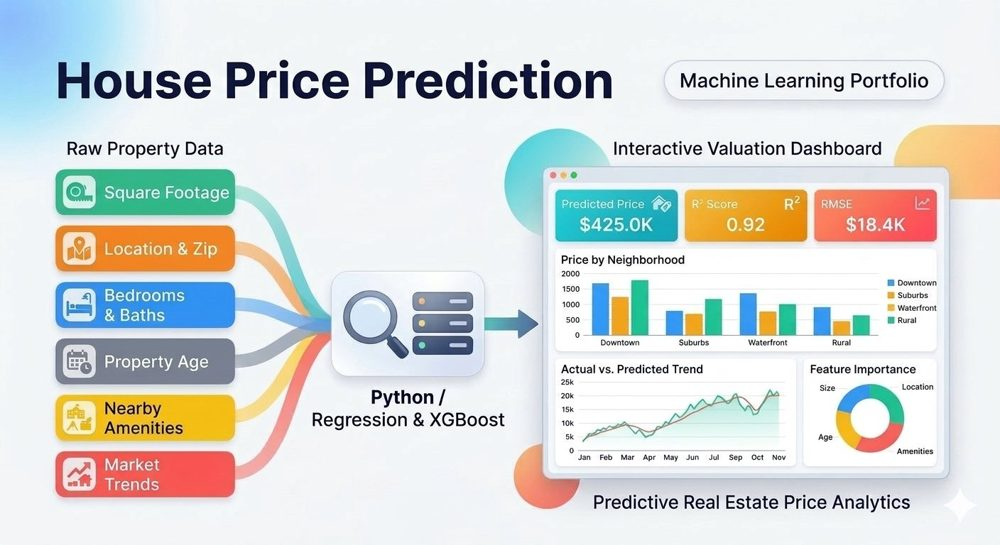

Project 1 of 4 · data science
House Price Prediction
PythonScikit-learnPandasSeabornJupyter

Project cover graphic. Figures shown inside the graphic are illustrative.
1 · Overview
Project overview & problem statement
The problem
Pricing a house by gut feeling is unreliable because dozens of factors, such as location, size and age, all interact. This project builds a model that estimates a fair price from the property’s features.
Main goals
- Predict house prices from 80+ property features.
- Compare a simple model against more advanced ones to see if the extra complexity pays off.
- Find out which features drive the price the most.
2 · Tools
Tools & technologies used
Language
Python
Data handling
Pandas
Machine learning
Scikit-learn: Linear Regression, Ridge Regression, Random Forest Regressor
Visualisation
Seaborn (correlation and residual plots)
Environment
Jupyter Notebook
3 · Methodology
Data, process & methodology
1
Understand the data
Reviewed the dataset of 80+ property features and checked types, ranges and missing values.
Reviewed the dataset of 80+ property features and checked types, ranges and missing values.
2
Clean the data
Removed outliers, since a few extreme records can distort what the model learns.
Removed outliers, since a few extreme records can distort what the model learns.
3
Transform the data
Applied log transforms to skewed values such as price so very expensive houses do not dominate training.
Applied log transforms to skewed values such as price so very expensive houses do not dominate training.
4
Encode categories
Converted text categories into numbers with label encoding so the models can use them.
Converted text categories into numbers with label encoding so the models can use them.
5
Explore relationships
Plotted correlations in Seaborn to see which features move together with price.
Plotted correlations in Seaborn to see which features move together with price.
6
Train the models
Trained Linear, Ridge and Random Forest regressors on a training split.
Trained Linear, Ridge and Random Forest regressors on a training split.
7
Evaluate
Tested on houses the models had never seen, and used residual plots to check that errors followed no pattern.
Tested on houses the models had never seen, and used residual plots to check that errors followed no pattern.

Workflow graphic. Figures shown inside the graphic are illustrative.
4 · Results
Key features, insights & results
0.89
R² on the test set18%
improvement in accuracy80+
property features usedFindings
- Location, area and age of the property were the key drivers of price.
- Ridge regularisation keeps the model stable when many features overlap.
- Random Forest can capture non-linear effects, for example large houses in good locations costing disproportionately more.
Visual placeholder: add your own notebook plot or dashboard screenshot here (save it in the images folder).
5 · Conclusion
Conclusion & business impact
Conclusion
The project shows that a cleaned, well-prepared dataset and a model comparison give a reliable, explainable price estimate rather than a guess.
Actionable takeaways
- An R² of 0.89 means the model explains about 89% of the variation in prices on unseen data.
- Knowing the main price drivers helps buyers, sellers and agents focus on what really moves value.
- Data cleaning and feature handling mattered as much as the choice of model.